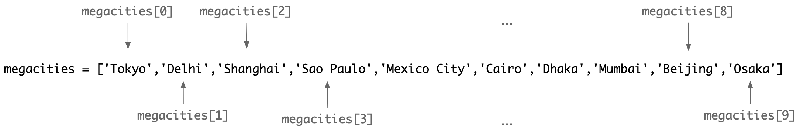

3 Python 102
By the end of this chapter, you should be able to:
- Understand and perform common operations on Python’s built-in data structures, including lists, tuples, and dictionaries.
- Use for loops and comprehensions to perform operations on items in lists, tuples, and dictionaries.
- Use the operators
inandnot inin control flow. - Articulate what it means for a Python object to be ‘iterable’.
- Design, develop, and use your own custom functions.
- Read data from, and write data to, external files.
In this chapter, you’ll learn about Python’s most common built-in data structures: lists, tuples, and dictionaries. We’ll start by exploring the basic syntax for each of these data structures, followed by some of the most common methods and operations used to manipulate the items they contain. We’ll place a heavy emphasis on understanding how to iterate over the items in a data structure using for loops and comprehensions. Finally, we’ll learn how and why to write our own custom functions and how to work with external files.
3.1 Working with Python’s Data Structures
3.1.1 Working with Lists and Tuples
In Python, lists are ordered collections of any object, such as strings, integers, floats, or even other data structures like lists or dictionaries. The items in a list may be of the same type, but they don’t have to be. Python lists are very flexible—you can mix information of various kinds, add information to the list on the fly, and remove or change any of the information the list contains. This is not always the case in other languages.
The most basic list looks like this:
my_list = []The above code produces an empty list; it contains no objects. You can also create an empty list by referring directly to the built-in list type:
my_list = list()All lists begin and end with square brackets [], and elements are separated by commas. Below, we define two lists containing strings (megacities in one list and their countries in another) and one list containing numbers (city population in 2018). Note that we’re using _ as a thousands separator to make our code more readable. As far as Python is concerned, 37_468_000 and 37468000 are identical numbers, but the former is easier to read.
megacities = ['Tokyo', 'Delhi', 'Shanghai', 'São Paulo', 'Mexico City', 'Cairo', 'Dhaka', 'Mumbai', 'Beijing', 'Osaka']
countries = ['Japan', 'India', 'China', 'Brazil', 'Mexico', 'Egypt', 'Bangladesh', 'India', 'China', 'Japan']
pop2018 = [37_468_000, 28_514_000, 25_582_000, 21_650_000, 21_581_000, 20_076_000, 19_980_000, 19_618_000, 19_578_000, 19_281_000]Every item in a list has an index based on its position in that list. Indices are integers, and in Python, indexing starts at 0, which means that the first item in any list starts at index 0. In the megacities list, the index for 'Tokyo' is 0, 'Delhi' is 1, 'Shanghai' is 2, and so on.

We can use the index to select a specific item from a list by typing the name of the list and then the index number inside square brackets:
megacities[3] # Returns 'São Paulo'We can also access individual items by working from the end of the list using negative indices. In this case, -1 refers to the last item, -2 to the second-last item, and so on:
countries[-2] # Returns 'China'When we access an individual item from a list, Python returns the item in its expected data type. For example, megacities[3] returns 'São Paulo' as a string, and pop2018[3] returns the integer 21650000. We can use any methods associated with that particular data type:
pop2018[3] * 3 # Multiplies the population by 3megacities[3].upper() # Converts 'São Paulo' to uppercaseUsing square brackets to access an element in a list (or tuple, or dictionary) is called subscripting, and it can accept a wider variety of indices than a simple integer. One particularly useful way to subscript an object is to use slice notation, where two index positions are separated by a colon:
megacities[0:3] # Returns the first three citiesUsing a slice to subscript a list returns the item at the first index position and every item up to—but not including—the second index position. To retrieve the last three entries of our list, you would use:
countries[7:10] # Returns the last three countriesYou can also use slice notation with one integer missing to return all of the items in a list up to—or starting at—a particular index position. The following gives us the first three megacities:
megacities[:3]And this returns the last seven:
megacities[-7:]3.1.1.1 Looping Over Lists
Python’s lists are iterable objects, which means that we can iterate (or loop) over the list’s elements to execute code for each one. This is commonly done with a for loop. Below, we iterate over the list megacities and print each item:
for city in megacities:
print(city)This code creates a temporary variable called city that refers to the current element of megacities being iterated over. After the loop completes, city will have referred to each element in the list. The name for this variable should be descriptive and convey information about the elements of the list.
3.1.1.2 Modifying Lists
Lists can be changed in a number of ways. We can modify the items in the list like we would other values, such as changing the string 'Mexico City' to 'Ciudad de México' using the value’s index:
megacities[4] = 'Ciudad de México'
print(megacities)We often want to add or remove items from a list. Let’s add 'Karachi' to our three lists using the .append() method:
megacities.append('Karachi')
countries.append('Pakistan')
pop2018.append(16_093_786)
print(len(megacities), len(countries), len(pop2018))Our lists now contain 11 items each; our Karachi data was appended to the end of each list.
You’ll use .append() frequently. It’s a convenient way to dynamically build and modify a list. This book has many examples of creating an empty list that is populated using .append(). Let’s create a new list that will contain a formatted string for each city:
city_strings = []
for city in megacities:
city_string = f"What's the population of {city}?"
city_strings.append(city_string)
for city_string in city_strings:
print(city_string)Removing items is just as straightforward. There are a few ways to do it, but .remove() is one of the more common ones:
megacities.remove('Karachi')
countries.remove('Pakistan')
pop2018.remove(16_093_786)Sometimes we want to change the organization of a list. This usually involves sorting the list in some way (e.g., alphabetically, numerically). Below, we make a copy of megacities and sort it alphabetically. We don’t want to modify the original list, so we explicitly create a new copy using the .copy() method:
megacities_copy = megacities.copy()
megacities_copy.sort()
print(megacities_copy)Note that we do not use = when we call .sort(). This method modifies the list in place. Assigning megacities_copy = megacities_copy.sort() will actually set megacities_copy to None because the .sort() method returns None.
If we change the order of items in a list using the .sort() method, the original order is lost. We cannot ‘undo’ the sort unless we keep track of the original order. That’s why we started by making a copy. To temporarily sort our list without changing the order of items in the original list, use the sorted() function:
sorted_megacities = sorted(megacities)
print(sorted_megacities)When applied to a list of numbers, .sort() will reorder the list from smallest to largest:
pop_copy = pop2018.copy()
pop_copy.sort()
print(pop_copy)To sort a list in reverse alphabetical order, or numbers from largest to smallest, use the reverse=True argument:
pop_copy.sort(reverse=True)
print(pop_copy)
megacities_copy.sort(reverse=True)
print(megacities_copy)The fact that lists are ordered makes them very useful. However, if you change the order of a list, you could easily introduce costly mistakes. For example, if we sorted our pop2018 list above without also sorting the megacities and countries lists in the same way, they would become misaligned. We would lose the ability to accurately pair cities with their populations:
print(f'The population of {megacities[4]} in 2018 was {pop2018[4]}') # Might produce incorrect pairing3.1.1.3 Zipping and Unzipping Lists
When you have data spread out over multiple lists, it can be useful to zip those lists together so that all the items with an index of 0 are associated with one another, all the items with an index of 1 are associated, and so on. The most straightforward way to do this is to use the zip() function, which is illustrated in Figure 3.1 and the code block below. Clever usage of zip() can accomplish a great deal using very few lines of code.
for paired in zip(megacities, countries, pop2018):
print(paired)The actual object that the zip() function returns is a ‘zip object’, within which our data is stored as a series of tuples (discussed later). We can convert these zipped tuples to a list of tuples using the list() function:
zipped_list = list(zip(megacities, countries, pop2018))
print(zipped_list)It’s also possible to unzip a zipped list using the * operator and multiple assignment (also called ‘unpacking’), which allows us to assign multiple values to multiple variables in a single line:
city_unzip, country_unzip, pop_unzip = zip(*zipped_list)
print(city_unzip)
print(country_unzip)
print(pop_unzip)3.1.1.4 List Comprehensions
Earlier, we created an empty list and populated it using .append() in a for loop. We can also use list comprehensions, which can produce the same result in a single line of code. To demonstrate, let’s try counting the number of characters in the name of each country in the countries list using a for loop and then with a list comprehension.
Using a for loop:
len_country_name = []
for country in countries:
n_chars = len(country)
len_country_name.append(n_chars)
print(len_country_name)Using a list comprehension:
len_country_name = [len(country) for country in countries]
print(len_country_name)List comprehensions can be a little strange at first, but they become easier with practice. The key things to remember are that they will always include:
- The expression itself, applied to each item in the original list.
- The temporary variable name for the iterable.
- The original iterable, which in this case is the list.
Above, the expression was len(country), country was the temporary variable name, and countries was the original iterable.
We often wish to add conditional logic to our for loops and list comprehensions. Let’s create a new list of cities with populations greater than 20,500,000 with the help of the zip() function:
biggest = [[city, population] for city, population in zip(megacities, pop2018) if population > 20_500_000]
print(biggest)The result—biggest—is a list of lists. We can work with nested data structures like this using the same tools we use for flat data structures. For example:
for city in biggest:
print(f'The population of {city[0]} in 2018 was {city[1]}')When should you use a for loop and when should you use list comprehension? In many cases, it’s a matter of personal preference. List comprehensions are more concise while still being readable with some Python experience. However, they become unreadable very quickly if you need to perform a lot of operations on each item or if you have complex conditional logic. In those cases, you should avoid list comprehensions to keep your code readable.
List comprehensions are very popular in Python, so it’s important to know how to read them. Since for loops and list comprehensions do the same thing in slightly different ways, you should be able to convert one into the other and back again.
3.1.1.5 Copying Lists
Earlier, we copied a list using the .copy() method, which is helpful if we want to preserve our original list. Could we accomplish this using the familiar = operator?
countries_copy = countries
print(countries_copy)This approach appears to create a copy of countries. However, when we copy a list using the = operator, we are not creating a new object. Instead, we have created a new variable name that points to the original object in memory. Any modifications made using countries_copy will change the same object in memory referenced by countries. If we append 'Karachi' to countries_copy and print countries, we would see 'Karachi' in both lists. If we want to preserve the original list and make modifications to the second, this will not do.
Instead, we can use the .copy() method to create a shallow copy of the original list or use the copy module to create a deep copy. To understand the difference, compare a flat list (e.g., [1, 2, 3]) with a list of lists (e.g., [[1, 2, 3], [4, 5, 6]]). The list of lists is nested; it is deeper than the flat list. If we perform a shallow copy (i.e., .copy()) of the flat list, Python will create a new object that is independent of the original. But if we create a shallow copy of the nested list of lists, Python only makes a new object for the outer list; it’s only one level deep. The contents of the inner lists [1, 2, 3] and [4, 5, 6] are not copied; they are references to the original lists.
When working with nested data structures, such as lists of lists, we need to use the deepcopy() function from the copy module if we want to create a new object that is fully independent of the original:
import copy
nested_list = [[1, 2, 3], [4, 5, 6]]
shallow_copy = nested_list.copy()
deep_copy = copy.deepcopy(nested_list)Now, modifications to deep_copy will not affect nested_list, even in the nested elements.
3.1.1.5.1 In or Not In?
Lists used in research contexts are usually far larger than the examples in this chapter. They may have thousands or even millions of items. To find out if a list contains or does not contain a specific value, rather than manually searching a printed list, we can use the in and not in operators, which will evaluate to True or False:
'Mexico' in countries'Mexico' not in countriesThese operators can be very useful when using conditions. For example:
to_check = 'Toronto'
if to_check in megacities:
print(f'{to_check} was one of the 10 largest cities in the world in 2018.')
else:
print(f'{to_check} was not one of the 10 largest cities in the world in 2018.')3.1.1.6 Using enumerate
In some cases, we want to access both the item and its index position from a list at the same time. We can do this with the enumerate() function. Recall the three lists from the megacity example. Information about each megacity is spread out across three lists, but the indexes are shared across those lists. Below, we enumerate megacities, creating a temporary variable for the index position (i) and each item (city), and iterate over it. We use those values to print the name of the city and then access information about the country and city population using the index position. This works because the items in the lists are ordered and aligned:
for i, city in enumerate(megacities):
print(f'{city}, {countries[i]}, has {pop2018[i]} residents.')As previously mentioned, we can include as many lines as we want in the indented code block of a for loop, which can help us avoid unnecessary iteration. If you have to perform multiple operations on items in a list, it’s best to iterate over the data structure once and perform all the necessary operations rather than iterate over the list multiple times.
3.1.1.7 Tuples: When Your Lists Won’t Change
In Python, every object is either mutable or immutable. We’ve just shown many ways that lists are mutable: adding and removing items, sorting them, and so on. Any data type in Python that allows you to change something about its composition is mutable. Data types that do not permit changes after instantiation are immutable.
Generally speaking, computational social scientists prefer to work with mutable objects such as lists. The flexibility we gain by working with a mutable data type usually outweighs the advantages of working with immutable types—but not always. To illustrate the usefulness of immutable types, we’ll introduce the tuple.
A tuple is an ordered, immutable series of objects. You can think of tuples as a special kind of list that can’t be modified once created. In terms of syntax, values in a tuple are stored inside parentheses () rather than square brackets []. We can instantiate an empty tuple in a similar fashion to lists:
my_empty_tuple = ()Just like with lists, we can instantiate our tuples with pre-loaded values:
a_useful_tuple = (2, 7, 4)We can easily convert between tuples and lists using the tuple() and list() functions, respectively:
print(type(countries))
countries_tuple = tuple(countries)
print(type(countries_tuple))There are many uses for tuples: if you absolutely must ensure that the order of a series of objects is preserved and unchangeable, use a tuple. To illustrate, let’s use the list method .sort() to change the order of items in our countries list. Note that we will use the .copy() method to preserve a record of the original order:
countries_sorted = countries.copy()
countries_sorted.sort()
countries_sortedNow, the countries are in alphabetical order. However, the countries_sorted list is out of order with the megacities and pop2018 lists. In a large project, accidentally sorting a list that shouldn’t have been sorted might create serious mismatches in your data. To prevent something like this from happening, consider storing your lists as tuples instead; that way, if you try to use the .sort() method on a tuple, Python will throw an error and prevent unintended changes.
Tuples have a few other advantages over lists:
- Performance: Using tuples can speed up your code and reduce memory usage.
- Hashability: Tuples can be used as keys in dictionaries because they are immutable, whereas lists cannot.
Finally, even though lists are mutable and tuples are immutable, they have another feature in common: they are both iterable. Any of the forms of iteration that can be applied to lists can be applied to tuples, too.
3.1.2 Dictionaries
Another Python data structure that you’ll frequently see and use is the dictionary. Unlike lists, dictionaries are designed to connect pieces of related information. Dictionaries offer a flexible approach to storing key-value pairs. Each key must be an immutable Python object, such as an integer, a float, a string, or a tuple, and there can’t be duplicate keys. Values can be any type of object. We can access values by specifying the relevant key.
Where lists use square brackets [], and tuples use parentheses (), Python’s dictionaries wrap key-value pairs in curly braces {}, where the keys and values are separated by a colon :, and each pair is separated by a comma. For example:
tokyo = {
'country': 'Japan',
'pop2018': 37_468_000
}
print(tokyo)We can use as many keys as we like when we create a dictionary. To quickly access a list of all the keys in the dictionary, we can use the .keys() method:
print(tokyo.keys())To access any given value in a dictionary, we provide the name of the dictionary object followed by the name of the key whose value we want to access inside square brackets and quotes:
tokyo['pop2018']Like lists, but unlike tuples, dictionaries can be modified as we work. We can add a new key-value pair to tokyo—say, the population density of the Tokyo Metropolitan Area—using the same syntax we learned for referencing a key. Because the key we are referencing doesn’t exist in the dictionary, Python knows we are creating a new key-value pair:
tokyo['density'] = 6_168
print(tokyo)We could have also started with an empty dictionary and populated it with key-value pairs:
delhi = {}
delhi['country'] = 'India'
delhi['pop2018'] = 28_514_000
delhi['density'] = 11_312
print(delhi)3.1.2.1 Nested Data Structures
Lists, tuples, and dictionaries can all be nested in a variety of ways, including using dictionaries as items in a list, lists as items in dictionaries, and so on. Working with these nested structures is straightforward. Whatever value you are working with, no matter its position in the nested data structure, you can use the methods appropriate to that type.
If we have a dictionary that has lists as values, we can subscript the values after accessing them with the appropriate key:
japan = {}
japan['cities'] = ['Tokyo', 'Yokohama', 'Osaka', 'Nagoya', 'Sapporo', 'Kobe', 'Kyoto', 'Fukuoka', 'Kawasaki', 'Saitama']
japan['populations'] = [37, 3.7, 2.7, 2.3, 1.9, 1.5, 1.5, 1.5, 1.5, 1.2]
print(japan)Accessing the fifth city:
japan['cities'][4]3.1.2.2 Lists of Dictionaries
We can also store dictionaries as elements in a list. Earlier we created dictionaries tokyo and delhi. Both contain the same keys: 'country', 'pop2018', and 'density'. Adding them to a list is straightforward:
top_two = [tokyo, delhi]
for city in top_two:
print(city)While any number of arrangements is possible, things can quickly become complicated the more deeply data structures are nested. If you find yourself building complex nested data structures, take a moment to think about what problem you’re trying to solve and assess your approach. There is almost certainly a way to approach the problem that is cleaner and simpler, reducing the likelihood of making a difficult-to-detect mistake while also making your code more readable.
3.2 Custom Functions
So far, we’ve used a few functions that are built into Python, such as print() and len(). In these and other cases, built-in functions take an input, perform some operations, and then return an output. For example, if we pass the len() function a string, it computes the number of characters in that string and returns an integer:
seoul = 'Seoul, South Korea'
len(seoul)We could have computed the length of that string without using len(), for example:
length = 0
for character in seoul:
length += 1
print(length)Both chunks of code compute the length of the string stored in seoul, but using len() avoids unnecessary work. We use functions to take advantage of abstraction: converting repeated tasks into condensed and easily reusable tools. Modern software is built on decades of abstraction. We don’t code in binary because we have abstracted that process, moving into higher-level languages. Functions save us time, space, and brainpower. This is what you should aim for when you write your own functions: identify small tasks or problems that you repeat often, and write a function that handles them so you can focus on more important problems.
Imagine a set of operations that we need to apply multiple times, each time with a different input. You start by picking one of those inputs and writing the code that produces the end result you want. Where do you go from here? One option, which I do not recommend, is to copy and paste that code for each of the inputs. Once your code is copied, you change the names of the inputs and outputs so that you get the desired output for each input.
What happens if you discover a problem in the code or decide to improve it? You have to change the relevant parts of your code in multiple places, and each time you risk missing something or making a mistake. To make matters worse, the script is far longer than it needs to be, and the sequence of operations is harder to follow and evaluate.
Instead, we can write our own functions that let us reuse chunks of code. If we discover a problem or something we want to change, then we only have to make the change in one place. When we execute our updated function, it will reliably produce the newly desired output. We can store our functions in a separate script and import them elsewhere, making those scripts and notebooks more concise and easier to understand. And if we use descriptive names for our functions, we can abstract away low-level details to focus on higher-level concepts. This is always a good idea, especially when working on large projects.
Writing our own functions offers several benefits:
- Reusability: Don’t do work that has already been done.
- Abstraction: Abstract away low-level details so you can focus on higher-level concepts and logic.
- Error Reduction: If you find a mistake, you only need to fix it in one place.
- Readability: Shorter and more readable scripts are easier to understand and maintain.
3.2.1 Writing Custom Functions
To define a function in Python, you start with the keyword def followed by the name of the function, parentheses containing any arguments the function will take, and then a colon :. All code that is executed when the function is called is contained in an indented block. Below, we define a function called welcome() that accepts a name and prints a greeting:
def welcome(name):
print(f'Hi, {name}! Good to see you.')Calling the function:
welcome('Miyoko')In this case, the function prints a new string to the screen. While this can be useful, most of the time we want to actually do something to the input and then return a different output. If a function does not explicitly return an output, it will still return None.
Here’s an example of a function that cleans a string:
def clean_string(some_string):
cleaned = some_string.strip().lower()
return cleaned
cleaned_str = clean_string(' Hi, my name is John McLevey. ')
print(cleaned_str)User-defined functions can be as simple or as complex as we like, although you should strive to design functions that are as simple as possible. The first and most important step is to know what problem you’re trying to solve. If you understand a problem, you can often break it down into smaller sub-problems, some of which might be repeated many times. Rather than write an enormous block of code that handles everything, you can write several sub-functions that individually handle these smaller problems, letting you better organize your approach.
You can also define functions with default arguments, allowing you to call the function without specifying all parameters every time:
def greet(name, message='Good to see you'):
print(f'Hi, {name}! {message}.')
greet('Miyoko')
# or override the default message
greet('Miyoko', 'How have you been')There is plenty more that could be said about writing your own functions; however, we’ll set further discussions aside for now. Throughout the rest of this book, we’ll see many examples of custom functions, and you’ll have many opportunities to write and improve your own.
3.3 Reading and Writing Files
When working with data, you will routinely find yourself reading from and writing to files on disk. While we’ll delve into specifics like reading CSV files or interacting with databases in later chapters, it’s important to understand the basics of file I/O (Input/Output) in Python.
To interact with files in Python, you typically need to:
- Open the file.
- Perform some operation (read, write, append, etc.).
- Close the file.
However, manually opening and closing files can be error-prone if, for example, an exception occurs before you close the file. To handle this gracefully, Python provides the with statement, which ensures that the file is properly closed after its suite finishes, even if an exception is raised.
Here’s how you can read from a text file using the with statement:
from pathlib import Path
file_path = Path('data/some_text_file.txt')
with file_path.open(mode='r', encoding='utf-8') as file:
text_data = file.read()
print(len(text_data))In this example:
- We use the
pathlibmodule to handle file paths in an object-oriented way, which is more robust and portable across different operating systems. - The
file_path.open()method is used instead of the built-inopen()function, which integrates nicely withpathlib. - The
withstatement ensures that the file is automatically closed after we’re done with it. - The
mode='r'argument specifies that we are opening the file in read mode. - The
encoding='utf-8'argument specifies the file encoding, which is important for correctly reading text files, especially those containing non-ASCII characters.
To read the file line by line into a list, you can use the .readlines() method:
with file_path.open(mode='r', encoding='utf-8') as file:
list_of_lines = file.readlines()
print(len(list_of_lines))If you want to write data to a file, you can use mode='w' for write mode:
with file_path.open(mode='w', encoding='utf-8') as file:
file.write("Hello, World!")This will create a new file or overwrite an existing file with the text “Hello, World!”.
3.3.1 Exception Handling with File Operations
When working with files, it’s good practice to include exception handling to manage potential errors, such as the file not existing or permission issues.
try:
with file_path.open(mode='r', encoding='utf-8') as file:
text_data = file.read()
except FileNotFoundError:
print(f"The file {file_path} does not exist.")
except IOError:
print(f"An error occurred while reading the file {file_path}.")3.4 Pace Yourself
There’s much more to Python than what we’ve covered here, but it’s important to pace yourself. You don’t need to learn everything all at once before diving into your research projects. As you progress through the book, we’ll introduce additional Python concepts and techniques relevant to specific research contexts. This just-in-time learning approach allows you to build a solid foundation while acquiring new tools as you need them.
Further Reading
There is no shortage of excellent resources for learning Python. If you’re looking for more in-depth material, consider the following:
- “Python for Everybody” by Charles Severance: A great starting point for beginners, offering a comprehensive introduction to Python programming.
- “Automate the Boring Stuff with Python” by Al Sweigart: Focuses on practical programming skills for automating tasks.
- “Think Python” by Allen B. Downey: Offers a deeper dive into Python programming concepts.
Remember, the best way to learn programming is by doing. Practice regularly, experiment with code, and don’t hesitate to revisit concepts that are challenging.
3.5 Conclusion
In this chapter, we’ve expanded your Python programming skills by exploring essential data structures, functions, and file operations.
You learned about:
- Lists, Tuples, and Dictionaries: How to create and manipulate these built-in data structures, including adding, removing, and accessing elements. You also learned about the importance of mutability and immutability in Python objects.
- Iteration: How to loop over items in lists, tuples, and dictionaries using
forloops and comprehensions. This included understanding the use of functions likezip(),enumerate(), and list comprehensions to perform efficient data processing. - Custom Functions: The importance of writing your own functions to promote code reuse, abstraction, and readability. You saw how to define functions using
def, pass arguments, and return values. - Reading and Writing Files: The fundamentals of file I/O in Python, including using the
withstatement for safe file handling, reading from and writing to text files, and working with common data formats like JSON and CSV. - Best Practices: Introduced modern practices like using the
pathlibmodule for file path management and the importance of exception handling when working with files.
By mastering these concepts, you’re building a strong foundation for more advanced topics in computational social science. You’ll find that these skills are indispensable as you tackle complex data analysis tasks, work with larger datasets, and develop more sophisticated programs.
3.5.1 Key Points
- Data Structures: Understanding and using Python’s built-in data structures—lists, tuples, and dictionaries—is crucial for effective data manipulation.
- Iteration and Comprehensions: Leveraging loops and comprehensions allows for efficient processing of iterable objects.
- Control Flow Operators: Using
in,not in, andisinstanceenhances your ability to write conditional code. - Custom Functions: Writing your own functions promotes code reuse and better organization.
- File Operations: Mastering file I/O, including reading and writing different file types, is essential for handling data.
- Modern Practices: Employing modules like
pathliband proper exception handling aligns your code with contemporary best practices.